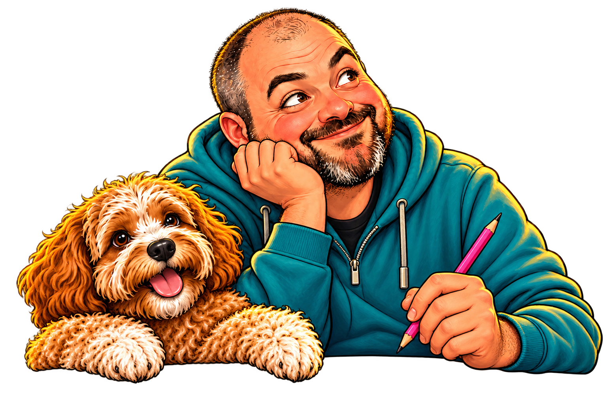

Space to read
Unpack the paragraph.
Add manageable paragraph breaks while preserving the original wording.
Try the space exampleDifferent minds. Welcome here.
A little less overwhelm.
A little more you.
Open-source tools that help AI communicate around your preferences. Built with Rust. Runs on your device.
Try the little things that help
Same words. A different layout.
Open the document. Check the title.
Save your changes. Close the document.
An existing sequence, kept in order.
A phrase can mean more than one thing.
Let's touch base tomorrow.
Possible meaning: speak or check in.
Check the context before changing the wording.
Interactive examples · sample text only · no AI call

Take your time.
Everything will still be here.
A little connection. A lot of possibility.
The Model Context Protocol (MCP) lets an AI client use external tools, prompts and reference material.
Diffyn runs on your device, giving compatible clients ways to adapt communication to your stated preferences.
See how it fits togetherOn the noticeboard
Three tools, two prompts and four guides.
Choose the support that fits.
Space to read
Add manageable paragraph breaks while preserving the original wording.
Try the space exampleSpace to begin
Turn an existing sequence into ordered groups, with later steps still available.
When a goal lacks steps, Diffyn asks for detail instead of inventing a plan.
generate_executive_function_checklistSpace to understand
Flag a defined set of English idioms, with possible interpretations to review.
The original stays intact; context decides whether a phrase needs changing.
verify_clarity_and_literalismTemplates guide your AI client. They do not make model calls or guarantee a particular response.
The person comes first
No diagnosis needed. Explicit preferences take priority over labels.
Keep numbers, conditions and original wording intact.
Diffyn makes no outbound model calls and does not save submitted text or profiles.
A fresh page
Rust 1.99+ and an AI client that supports
local stdio MCP servers.
Run the command to build the tagged release with Cargo.
Install Rust first if you need itCopy the example configuration and replace the command with the absolute path to your executable.
Cargo usually installs to ~/.cargo/bin/diffyn; Windows uses diffyn.exe.
Reload your client's MCP configuration, then discover Diffyn's tools, prompts and resources.
cargo install --git https://github.com/nathcymru/Diffyn --tag v0.1.0 --locked diffynDownloads Rust dependencies during installation.
{
"mcpServers": {
"diffyn": {
"command": "/absolute/path/to/diffyn",
"args": []
}
}
}Replace the path. Syntax varies by client.
Local stdio only. Clients requiring hosted HTTP connections need a different transport.
Different + Diffinio
From the English Different and the Welsh Diffinio — to define.
Help shape what clearer communication looks like.
Sunflowers are a reminder that not every disability is visible. There is space here for needs that others may not see.
Diffyn is an engineering project, not a diagnostic or clinically validated intervention. Your AI client's own data policies still apply. Research and limits.